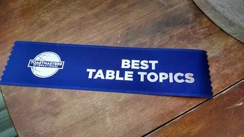
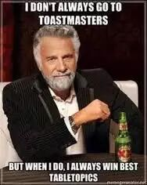

关键词：Table Topic Master是干嘛的


Table Topic （即席演讲）是开放给所有到会人员参加的环节。主持Table Topic的人（TTM）的基本任务是
（1）围绕已经确定的即兴演讲环节主题，负责设计若干问题、特定情景或其他方式。
（2）邀请会员或来宾上台做1-2分钟的即兴演讲。
（3）在白板上依次写下上台演讲者的名字。
关键词：Table Topic Master会议前准备

1、选题。话题虽追求新颖但过于新颖有可能导致演讲者无话可说。所以，选择贴近生活，热点问题并且少点专业性的题目较为适合。其次，题目应该简短，清楚，明了。有些问题虽然很优美，但却好像一个小散文，让演讲者理解都成困难，要在没有准备的情况下就更加困难啦。
2、设计提问。在设计问题/情景时，可以向导师或有经验的会员寻求帮助。若本环节为15分钟，准备至少8个以上的问题或特定情景。中文会议的话题可以更精彩或复杂一点，抑或阳春白雪一点。英文会议的问题应该尽量简单明了，贴近生活，让大家有话可说。
总而言之，尽量提跟大家生活、工作、兴趣爱好密切相关的问题或有争议性的热点话题，以便展开热烈讨论。
关键词：Table Topic Master会议中的介绍流程

第1步：开场。在上述会前准备的前提下，如果主题较为复杂，可以在开场言简意赅地破一下题。
第2步：邀请演讲人上台，再提问题。如果主题较难的话，开场问题可以先选择一个有经验的会员。如果话题较容易或有会员参与的情景对话，多多邀请guest参与进来。

看了我们的介绍有没有对TTM的职责和工作流程清晰起来呢？欢迎大家来北航头马俱乐部体验一下主持人哦！
我们的时间是每周五晚19:30-21:30（联合会议除外），地点是北航新主楼某教室，我们和你不见不散哦～

https://mp.weixin.qq.com/s/Gi60vk8OvtFRFEypkzxk3Q
本页为抢救式本地归档，图文已永久保存。